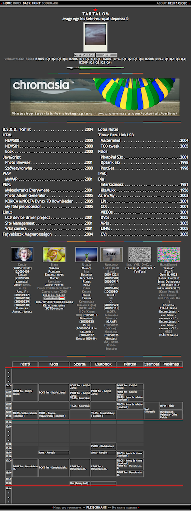
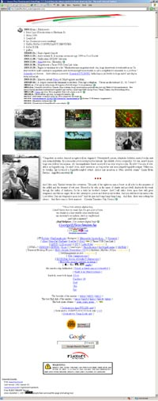

🕸 HTML (HyperText Markup Language) 2018
 |
[development / fejlesztés]
#web
#development
#fejlesztés
#html
#css
#jekyll
#hun
|
[development / fejlesztés]
#web
#development
#fejlesztés
#html
#css
#jekyll
#hun
 HTMLRelatíve egészen sok időt töltöttem már el különböző HTML-alapú weboldal ötletek tervezgetésével úgy, hogy sosem olvastam még el egyetlenegy aktuális HTML verzió teljes dokumentációját sem az elejétől a végéig, és így sajnos sosem tudtam még rendesen sem elmélyedni a témában.
HTMLRelatíve egészen sok időt töltöttem már el különböző HTML-alapú weboldal ötletek tervezgetésével úgy, hogy sosem olvastam még el egyetlenegy aktuális HTML verzió teljes dokumentációját sem az elejétől a végéig, és így sajnos sosem tudtam még rendesen sem elmélyedni a témában.
Most, amikor épp ezzel az új oldallal kisérleteztem, arra gondoltam, hogyha egyszer valamikor abbahagyom majd a TSM-mel (
 Spectrum Protect, aka:
Spectrum Protect, aka:  Tivoli Storage Manager, ADSTAR Distributed Storage Manager, ADSM) való munkáimat, akkor lehet, hogy talán ez lenne az a következő téma / terület, amit szívesen csinálnék majd helyette.
Tivoli Storage Manager, ADSTAR Distributed Storage Manager, ADSM) való munkáimat, akkor lehet, hogy talán ez lenne az a következő téma / terület, amit szívesen csinálnék majd helyette.
A sok “gondolkodás” közben / előtt, egészen a kezdetekkor már lementettem pár .html oldalt, amiben mind találtam valami nekem tetsző vagy éppen valami nekem nem tetsző dolgot és hamár összeraktam ezt az oldalt erről a témáról, akkor azonnnal adta magát, hogy itt lesz ezentúl ezenknek a régen lementett képeknek a végleges helyük. Lehet, hogy egyszer azt kis leírom majd, hogy melyikről mit gondolok, de nem most.
plastik.hu saved in 2010.
.png "index.hu saved in 2012.")
.png "google.com saved in 2012.")
.png "adobe.com saved in 2012.")
.png "nol.hu saved in 2012.")
.png "news_template.htm saved in 2010.")
news_template.htm saved in 2010.
.png "Tartalom saved in 2010.")
Tartalom saved in 2010.
Az új gazdaság régi szabálya saved in 2010.
google.hu saved in 2017.
Egy picit tovább visszatekerve még az idő kerekét, a lementett képeken kívül, a saját ötletekből és kisérletezgetésekből a következő nekem fontos oldalak maradtak fenn:
-

fleischmann.hu saved in 2010.
geocities.com/gfleischmann/ saved in 2004.
Az első saját weboldalam (~1997-ből) még a GeoCities1 ingyenes szolgáltatására épült és amit most látok csak, hogy ennek a nyomai egy lelkes internetes csoportnak (OoCities2) köszönhetően még mindig elérhetőek a következő címen is: www.oocities.org/gfleischmann. Én, az old.fleischmann.hu/geocities.com oldalon őrzöm az utolsó állapotát. Az oldal tanúsága alapján, 2003. év végéig volt ez még szerkesztve.
-
Egy kisebb szünet után valamikor ~2005-től a követező, már teljesen új formájában született újra a weboldalam: fleischmann.hu internetes domain alatt. (Külön köszönet illeti ezért Tóth Petit (G.A.M.F., Kecskemét) a domain név regisztrációért!) Ennek az oldalank az újdonsága a fotóblogolás volt, amihez a statikus oldalkat egy saját készítésű perl szkript “fordított” le. Ez az egész fotóblogolás egészen 2009 első negyedéig tartott. Közben (~2014-ben) magát az oldalt kiszolgáló és hosztoló fizikai gép (amiért nem győzök ugyszint eléggé hálás lenni Vihari Balázsnak, (Crédit Lyonnais, Budapest)) is megszűnt már. Azóta egészen 2017-ig nem is történt már vele tudtommal semmi változás egészen pontosan mostanáig, amikor is feltöltöttem minden általam elérhető archív fájlt a
 GitHub-ra és a pages.github.com szolgáltásra hagytam az oldalak tényleges kiszolgálását a korábban már említett old.fleischmann.hu domain alatt.
GitHub-ra és a pages.github.com szolgáltásra hagytam az oldalak tényleges kiszolgálását a korábban már említett old.fleischmann.hu domain alatt. -
_2017_-_gyorgy.fleischmann.hu_(2017-11-22).png "gyorgyfleischmann.hu saved in 2017.")
gyorgy.fleischmann.hu saved in 2017.
Épp amikor ezeket a feltöltéseket és a hozzájuk kapcsolódó finomításokat csináltam (DNS bejegyzések frissítése, régi karakter kódolások javítása a GitHub-hoz, Google Analytics újraélesztése) gondoltam arra, hogy mi lenne akkor, ha ide újra készítenék már egy teljesen új oldalt is, az itt adott technikákkal (GitHub, jekyll, HTML5, CSS3). Első körben a következőket tűztem ki célul:
- tudjon majd kezelni sorkizárt szövegeket úgy, hogy dinamikusan kezeljen ezzel együtt jobbra/balra igazított képeket vagy szövegdobozokat is;
- valahogy lehessen iniciálékat tenni a bekezdések elé;
- lehessen terminál szerű (fekete ablak) példákat beidézni;
- magától kezeljen forrásprogrami példákat szépen színezve a szintaxiskiemeléseket (syntax highlighting);
- lehessen fotószeteket kezelni és legyen hozzá egy egyszerűen használható teljesképernyős fotó megjelenítő;
- tudjon médiafájlokat kezelni: .mp3, .mp4, youtube, vimeo, soundcloud, …;
- normálisan kezelje a markdown fájl formázó lehetőségeit;
- a nyomtatott változat is értkelhető kimenetet eredményezzen;
A megálmodott és végül elkészített megoldást itt: jekyll tesztoldalam és jekyll tesztoldalam2 teszteltem.
Persze lehetne még ezt az egész dizájnt -, ha nevezhetjük ezt egyáltalán annak - is a végtelenségig csiszolgatni, de én most itt, ezen a ponton egyelőre abbahagyom, mert eddig okozott a belé fektetett munka örömöt, boldogásgot és nem szereném, ha ez a végén esetleg még rossz irányba változna meg!
-
Yahoo! GeoCities a Wikipedián ↩